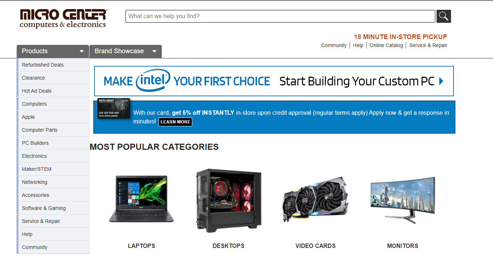

Mission Statement:
The purpose of this site is to provide customers with a cheaper option to building a computer via used and refurbished parts.
The purpose of this site is to provide customers with a cheaper option to building a computer via used and refurbished parts.
I plan on modeling my website after microcenter.com, the first reason being that it has a similar subject matter to my site. Microcenter is a store that sells computer parts, but that is not the only reason I chose it. The website is very user friendly and simple to understand. The home page instantly shows you the most popular catagories of items on their website, allowing the user to quickly navigate to looking for what they need.
This is the first page that the user will see. It will contain links to all other parts of the website, as well as featured products for consumers to quickly navigate to. This page will also contain a logo and search bar near the top.
The help page will contain contact information as well as information on products. This information will include a return policy, FAQ, product recommendations etc.
The community page will showcase videos and posts created by employees, or customers alike. These can include reviews on products that customers have recently purchases, or explanations on how new products work.
The product showcase page will bring you to the main shopping part of the website. This will show the most popular products as well as provide navigation to all other products by catagory.
The clearance page will provide an area that shows all of the best deals in one place. This will be useful for consumers who are really trying to stick to a tight budget.
The target audience of this website would be computer enthusiests for the most part. However, the site would ideally be easy to understand by somebody without much experience in computers. The main reason that this site is geared towards computer enthusiests is that the site sells PC parts rather than complete computers, and people wanting to build a PC usually know what kind of parts they already need, and this site will help them find the parts quicker.